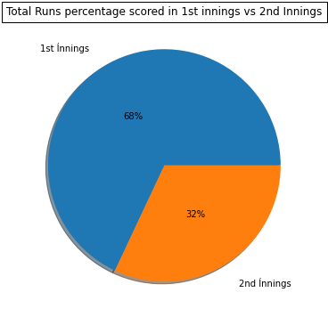
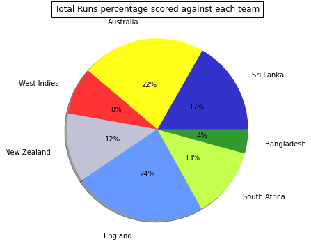
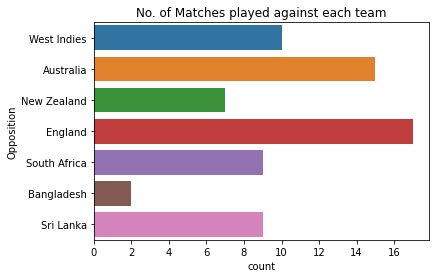
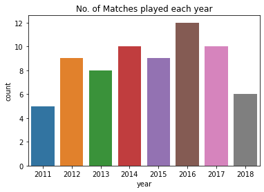
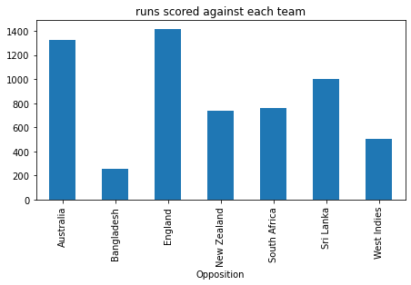
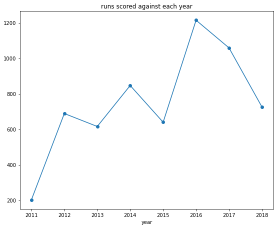
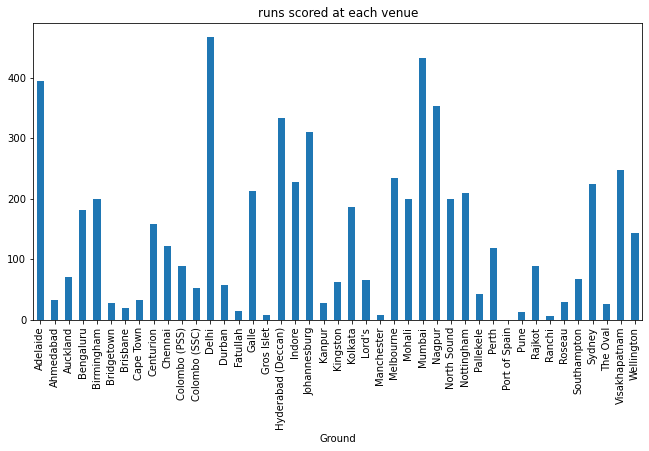
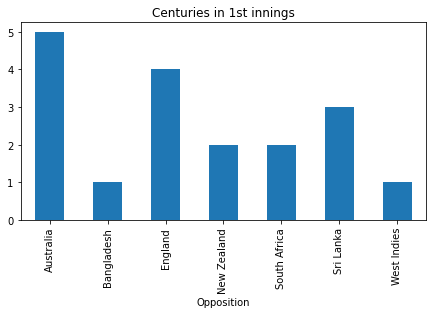
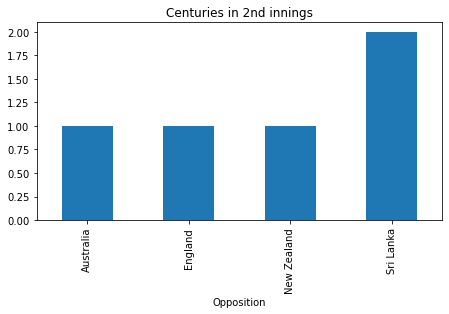
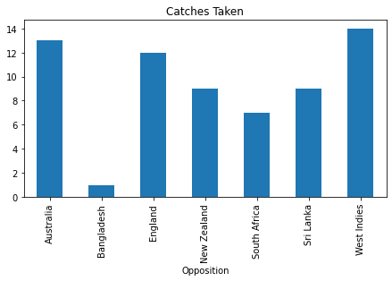

Analysis of Virat Kohli in Test Matches
No. of Times Virat Kohli got out for 0: 6
Virat Kohli has taken 65 catches in test matches
Virat Kohli conceded 76 runs without picking any wicket
Virat kohli has scored 5994 runs in 69 Matches
Virat Kohli has scored 1917 runs in second innings
Virat Kohli has scored 4077 runs in first innings
Runs scored against different countries
Runs Scored against England: 1417
Runs Scored against South Africa: 758
Runs Scored against New Zealand: 735
Runs Scored against West Indies: 502
Runs Scored against Austrailia: 1322
Runs Scored against Srilanka: 1004
Runs Scored against Bangladesh: 256
Career Scorecard
No. of Centuries Scored by Virat Kohli in 1st Innings is: 18
No. of Centuries Scored by Virat Kohli in 2nd Innings is: 5
Total No. of Centuries Scored by Virat Kohli 23
       No. of Double Centuries Score by Virat Kohli in 1st innings: 6
No. of Double Centuries Score by Virat Kohli in 2nd innings 0